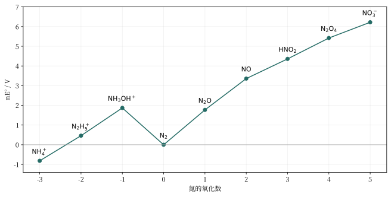

LECTURE 08.1 · 2026-11-19
主族氧化还原：Latimer 与 Frost 图
08.1.1 · REDOX COUPLES
还原电势先固定介质和方向
同一种元素可有多个氧化态。氢可为 H+ 中的＋1、H2 中的 0，以及氢化物 H− 中的−1。比较各态的热力学联系时，把每个电对按还原方向写出，说明水溶液介质与标准态。酸性标准氢电极的 2H+＋2e−→H2 电势约定为 0 V。
标准电势 E° 对应指定物种活度为 1、气体采用标准压力。以浓度近似活度时，常用 1 mol·L−1 来说明标准酸或碱条件。碱性氢电对写作 H2O＋e−→OH−＋半摩尔 H2，E°≈−0.828 V。改变介质后，H 的＋1 态代表物种和标准电势随之改变。
H− 与水会发生生成 H2 和 OH− 的强烈反应。图中给出的 H2／H− 电势约 −2.25 V，用于热力学路径比较。还原电势越正，相应氧化态物种接受电子的热力学倾向越强。判断总反应仍需配上另一电对，再比较电势差。
来源：08.1 Redox Chemistry of the Main Group Elements(1).pdf，第 1–3 页。
08.1.2 · LATIMER DIAGRAMS
Latimer 图把逐级还原排成一行
Latimer 图把同一元素按氧化数从高到低排列，在相邻物种之间写标准还原电势。例如酸中 O2→H2O2→H2O，氧化数为 0、−1、−2，两个箭头分别标 0.695 V 和 1.763 V。每个箭头对应一个配平半反应，必须检查每个元素原子的氧化数变化和电子数。
跨过中间态合并电对时，用 ΔG°=−nFE° 把各段转为 Gibbs 能，合并后再除总电子数。F 为法拉第常数，约 96485 C·mol−1。
O2＋2H+＋2e−→H2O2 与 H2O2＋2H+＋2e−→2H2O 各转移两个电子。合并的 O2／H2O 电势为 (2×0.695＋2×1.763) 除以 4，得 1.229 V。把反应式乘倍数时，ΔG° 和电子数同倍变化，E° 保持原值。
碱性 H2O＋2e−→OH−＋H− 由两个单电子过程组成，标准电势为 (−0.828−2.25) 的一半，即 −1.539 V。用这一结果也能看出氢化物从水中夺氢生成 H2 的趋势。
来源：08.1 Redox Chemistry of the Main Group Elements(1).pdf，第 2–5 页。
08.1.3 · DISPROPORTIONATION
歧化与归中看中间态左右电势
中间氧化态 A 可一部分被氧化到较高态 B，另一部分被还原到较低态 C，这称歧化。反方向由高、低两态共同生成中间态，称归中。按 Latimer 图 B→A→C 的方向标两个还原电势，歧化的电池电势为右侧电势减左侧电势。若差值为正，相应配平歧化反应的 ΔG° 为负。
H2O2 的右侧电势 1.763 V 大于左侧 0.695 V，所以 2H2O2→2H2O＋O2 的 E°=1.068 V。该方程转移 2 mol 电子，ΔG°≈−206 kJ。氧化半反应释放的 H+ 与还原半反应消耗的 H+ 正好抵消。
碱中 O2→HO2−→OH− 的电势分别约 −0.065 和 0.867 V，也可作同样判断，配平为 2HO2−→O2＋2OH−。是否很快观察到反应，还受到活化能、催化剂与实验条件影响。
来源：08.1 Redox Chemistry of the Main Group Elements(1).pdf，第 3–5 页。
08.1.4 · FROST DIAGRAMS
Frost 图的坐标和斜率
横轴 x 为元素氧化数，纵轴记 y=nE°，以单质氧化数零的位置为原点。这里从氧化数 x 的物种还原到单质时，用带符号的氧化数差建立纵坐标。比较不同氧化态时，计量基准统一为每摩尔该元素原子。多核分子中的氧化数按每个元素原子计。
两个点间直线斜率等于对应高氧化态到低氧化态的标准还原电势。纵坐标的差与相应 Gibbs 能联系，电势是该自由能差按电子数归一后的结果。图可按氧化数递增或递减绘制，只要坐标定义和斜率符号一致即可。
若某中间点高于左右两种物种连接的弦，该中间态可通过形成两端态的混合物降低自由能，有歧化趋势。若低于弦，则端点混合物向该中间态归中有利。弦上混合比例由元素守恒决定，应按氧化数距离配比例。最低点可用来找该图给定条件下较稳定的氧化态。

来源：08.1 Redox Chemistry of the Main Group Elements(1).pdf，第 6–7 页。
08.1.5 · NITROGEN EXAMPLES
从氮图取两种电势
酸中部分氮物种坐标为 N2O 的 (＋1,1.77)、NH3OH+ 的 (−1,1.87)、HNO2 的 (＋3,4.36)、N2H5+ 的 (−2,0.46)。N2O 到羟铵的电势为 (1.77−1.87) 除以 [1−(−1)]，得到 −0.050 V。亚硝酸到 N2H5+ 的电势为 (4.36−0.46) 除以 5，得到 0.780 V。
后一个半反应需要两个 N 原子，配成 2HNO2＋9H+＋10e−→N2H5+＋4H2O。图中每个 N 改变五个氧化数，完整方程共两个 N，所以电子数是十。用 E° 算整条方程的 ΔG° 时应采用十电子计量。
NH4NO3 中两个 N 分别为−3 和＋5，生成 N2O 后平均为＋1。硝酸根到＋1 的还原电势约 (6.22−1.77) 除以 4，即 1.1125 V；＋1 到铵的还原电势约 [1.77−(−0.815)] 除以 4，即 0.64625 V。因此该内部氧化还原过程的 E°≈0.46625 V。
按 NH4NO3→N2O＋2H2O 配平，每摩尔盐内部转移四摩尔电子，ΔG°≈−180 kJ·mol−1。若方程写为两摩尔盐分解，总 Gibbs 能也乘二。该计算使用图中酸性水溶液物种的标准数据，实物固体盐的分解还要计入相态和转化步骤。
用氮图与 Cu 电对比较时，可判断酸性硝酸根氧化铜的热力学驱动力。实际氮氧化物产物及比例还取决于浓度、温度与各路径速率，做实验反应方程时应结合指定条件。
来源：08.1 Redox Chemistry of the Main Group Elements(1).pdf，第 6–8 页。
08.1.6 · HYDROGEN AND CHLORINE
改变 pH 后重新选物种
氢的酸性图由 H+(＋1,0)、H2(0,0)、H−(−1,2.25) 组成。碱性图把＋1 态改为 H2O，坐标为 (＋1,−0.828)，其他两点采用给定数据。由此可见 pH 改变会移动含质子或水参与的电对位置。
氯的酸性图包含 HClO4、ClO3−、HClO2、HClO、Cl2 和 Cl−。碱性图对应 ClO4−、ClO3−、ClO2、ClO2−、ClO− 等。酸碱条件既改变物种形式，也改变含氧物种的自由能位置。
碱中 Cl2＋2OH−→Cl−＋ClO−＋H2O 的氧化数从 0 分成−1 和＋1，因此两边氯原子数相等。以碱性 Frost 图的 (−1,−1.358)、(0,0)、(＋1,0.421) 为例，0 态位于两端弦的上方。归一到两摩尔 Cl 原子的混合物，最终纵坐标总和降低 0.937，对应 E°≈0.937 V 的歧化驱动力。
来源：08.1 Redox Chemistry of the Main Group Elements(1).pdf，第 9–10 页。
08.1.7 · PHOSPHORUS EXAMPLES
磷图逐段配平并累积 nE°
酸中磷的还原顺序为 H3PO4（＋5）→H3PO3（＋3）→H3PO2（＋1）→P4（0）→P2H4（−2）→PH3（−3）。相邻电势为−0.276、−0.499、−0.365、−0.100、−0.006 V。由单质原点向两边累计，纵坐标依次为−1.915、−1.363、−0.365、0、0.200、0.206。
前两步均是原氧酸加 2H+ 和 2e−，生成下一种氧酸和 H2O。第三步为 4H3PO2＋4H+＋4e−→P4＋8H2O。再还原为 P2H4 时，P4＋8H+＋8e−→2P2H4。最后 P2H4＋2H+＋2e−→2PH3。
碱性顺序为 PO43−→HPO32−→H2PO2−→P4→PH3。相邻电势为−1.12、−1.57、−2.05、−0.89 V。对应氧化数＋5、＋3、＋1、0、−3 的纵坐标为−7.43、−5.19、−2.05、0、2.67。
前两步分别配为 PO43−＋2H2O＋2e−→HPO32−＋3OH−，以及 HPO32−＋2H2O＋2e−→H2PO2−＋3OH−。继续还原为 4H2PO2−＋4e−→P4＋8OH−，最后 P4＋12H2O＋12e−→4PH3＋12OH−。
来源：08.1 Redox Chemistry of the Main Group Elements(1).pdf，第 10–11 页。
08.1.8 · XENON DISPROPORTIONATION
氙的歧化：由半反应推完整计量
碱中 HXeO63− 的 Xe 为＋8，HXeO4− 为＋6，Xe 单质为零。＋8→＋6 的 E°=0.94 V，＋6→0 的 E°=1.24 V。两个还原半反应分别为 HXeO63−＋2H2O＋2e−→HXeO4−＋4OH−，以及 HXeO4−＋3H2O＋6e−→Xe＋7OH−。
将第一式倒写并乘三，再加第二式，消掉六个电子，得到 4HXeO4−＋5OH−→Xe＋3HXeO63−＋3H2O。电势差 E°=1.24−0.94=0.30 V，转移电子数为 6，故该反应 ΔG°≈−174 kJ。原子数、电荷数和电子数均可独立核对。
来源：08.1 Redox Chemistry of the Main Group Elements(1).pdf，第 11 页。